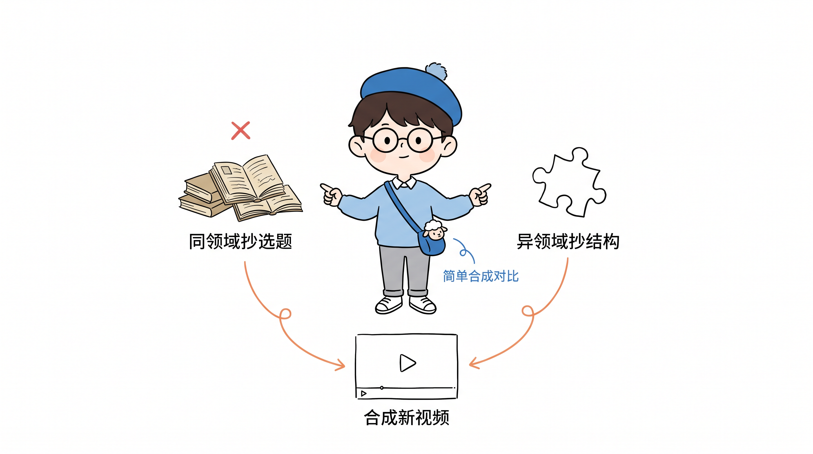
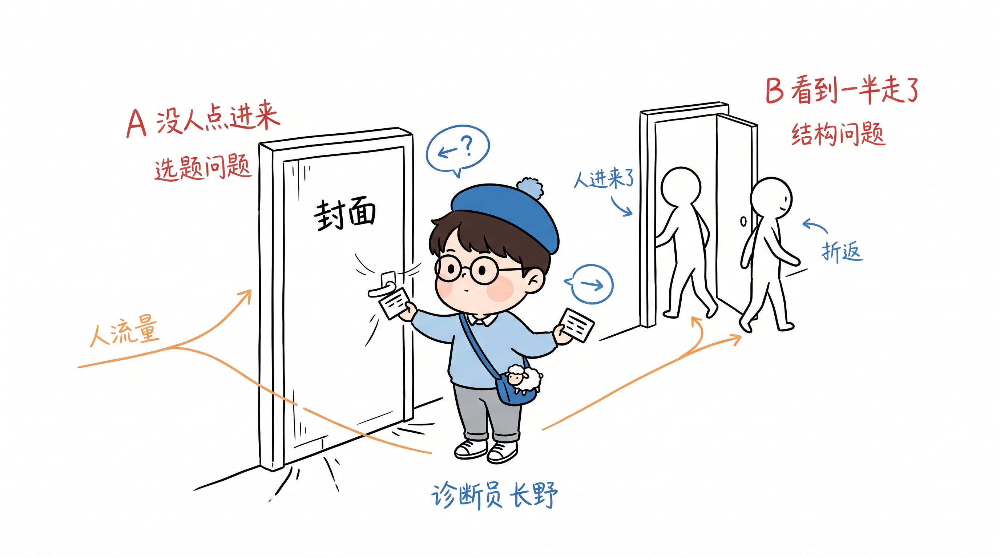
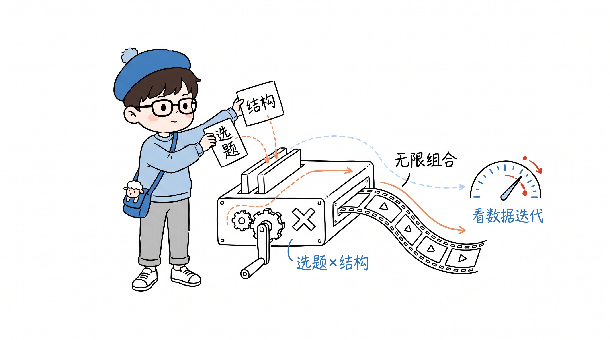

cat 怎么拍爆款视频.md
怎么拍爆款视频——同领域抄选题，异领域抄结构
2026-08-18 · 内容方法论 · 抄都不会抄，就先记住这一句话

开场：别急着抄
这条视频我们聊聊怎么拍爆款视频。我发现很多老伙计，连抄都不会抄，打小就不是好学生。先记住一句话：同领域抄选题，异领域抄结构。
很多人一上来就喜欢抄爆款，有点小聪明的人很容易上手，也容易出爆款。但你会发现很快进入瓶颈——为什么？同领域饱和。你能理解吗？
第一步：先诊断，再开药
怎么突破？直接进方法。第一步，找到你最近 5-10 条最差的视频，看它是 A 问题还是 B 问题。
A 问题：封面点击率差，两秒留存、五秒留存都很低——这是选题问题，人家不感兴趣，根本不点进来。
B 问题：人进来了，看到一半走了，完播率很差——选题人家感兴趣，是你讲得不咋地，结构问题。

第二步：对症下药
A 问题，选题不对，去找同领域的——不一定抄爆款，这个领域知识由来已久，知乎、公众号这些以前的平台都可以借鉴。这叫同领域抄选题。
B 问题，要抄结构，去异领域找。你看乔布斯，他产品的最初设计灵感来自包豪斯——把建筑、设计领域的结构用在了产品上。所以抄结构不一定只看短视频，悬疑剧、相声、脱口秀、TED 演讲都可以。
第三步：闭眼听，练就真功夫
到了异领域，给你个小建议：把屏幕调暗，闭上眼睛，只听。听四样：它怎么制造悬念预期？怎么把预期打破？打破了怎么拾起来？怎么结尾？
千万不要让 AI 帮你找，自己找。这个技能，练会了就是一直会的，别偷懒。
> 悬念预期 → 打破预期 → 拾起来 → 结尾。
> 这四样就是结构的骨架，听懂了，就长在自己身上。
第四步：无限组合，不断迭代
有了结构，有了选题，选题内容加上新结构，就是一条新视频。无限组合，做完看新数据，不断迭代。

你抄爆款不能全抄，抄着抄着就把自己限制在框框里了。看数据选择怎么改：封面点击、两秒五秒完播——A 问题；中间离开、完播率低——B 问题。
记住：同领域抄选题，异领域抄结构。